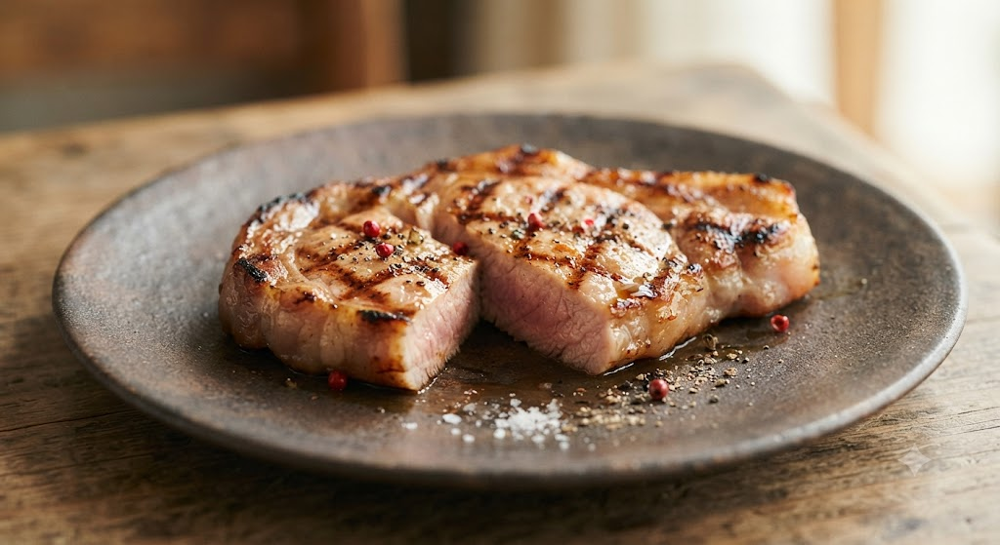
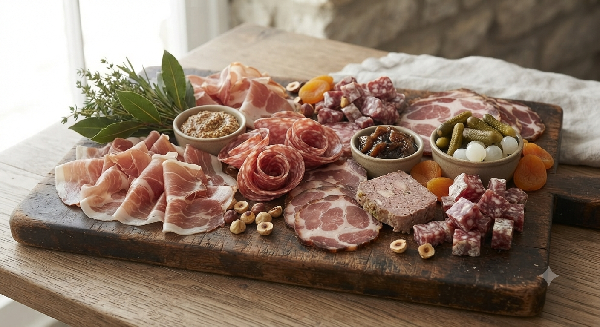

仙台・本院、静寂の中に灯る
熟練のフランス大衆料理。
「フランス料理」という言葉に、身構えしていませんか？
私たちが提供するのは、気取ったフルコースではなく、
フランスの街角にある食堂で愛される「ビストロ料理」です。
素材の声を聴き、余計なソースで飾らず、
一皿一皿の「輪郭」を際立たせる。
それは、驚くほど優しく、どこか懐かしい味わい。
日常の喧騒を離れ、
ワインを片手に、ゆったりとした時間を。
ここには、心まで解きほぐす魔法があります。
前日に予約してランチに訪れました。ビーツのスープ、山中鶏、デザートのピスタチオアイスまで、どれも繊細で確かな技術を感じます。地下鉄で行って、ワインと一緒に楽しむのが最高です。
— 40代・ご夫婦でのご利用
隠れ家のような居心地の良さ。ホタテのタルタルは、別料金を出してでも食べる価値のある一品です。シェフと女性スタッフの丁寧な説明も、料理の味をさらに引き立ててくれます。
— 特別な日のお食事に

「自宅でゆっくり本格的なワインタイムを過ごしたい」「遠方の大切な人へ贈りたい」
そんな多くのお客様からのご要望にお応えし、
アンセルクル特製の【お取り寄せ・オンラインショップ】を現在準備中です。
大人気のパテ・ド・カンパーニュ、滑らかな舌触りのレバームース、そしてプリッとした肉汁溢れる自家製ソーセージを出来たての状態で真空パックに。至福の家呑みワイン時間を演出します。
低温でじっくりと煮込み、旨味を極限まで含んだ鴨のコンフィとインゲン豆。ご家庭のオーブンで表面をカリッとグラチネ(焦げ目付け)していただくだけで、本格的なおもてなしの一皿が完成します。
※サービス開始の時期、限定予約の受付は公式Instagramにて先行して公開いたします。
完全予約制の小さなお店です。
最新の空席状況や期間限定メニューはInstagramにて公開しております。
皆様のご来店を、心よりお待ちしております。